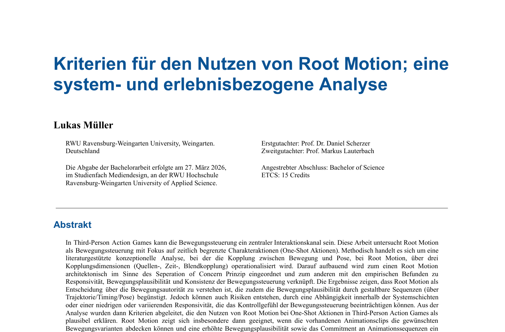

Research
2026

This is the bachelor's thesis I wrote for my Mediadesign course at RWU Ravensburg-Weingarten University. I wrote the thesis during my 9th and final semester, over the course of four months. I received a grade of 1.2 for both the thesis and the final presentation, and completed my bachelor's degree with an overall grade of 1.3.
...
Click on this DOWNLOAD link to get the PDF containing the thesis. You can also click this DOWNLOAD link to get the presentation as a PDF. Unfortunately, the GIFs are not animated in the PDF version.
Unlike a master's thesis, a bachelor's thesis is generally considered more of a training thesis, meaning that students are allowed to investigate topics that have already been explored extensively. I chose to focus my thesis on Root Motion, a technique used to move characters through virtual environments, such as those found in video games. Root Motion is a well-established and widely implemented technique in most game engines. However, despite being a core feature in game engines, I found very little scientific research specifically addressing its use and implications. This, combined with my own interest in learning more about the subject, motivated me to take a closer look at the technique. The final title of the thesis is:
In third-person action games, movement control can serve as a central channel for interaction. This study examines root motion as a method of movement control, focusing on time-limited character actions (one-shot actions). Methodologically, the study employs a literature-based conceptual analysis in which the coupling between movement and pose in root motion is operationalized across three dimensions: source coupling, temporal coupling, and blending coupling. Building on this, root motion is classified architecturally according to the "separation of concerns" principle and linked to empirical findings regarding responsiveness, movement plausibility, and the consistency of movement control. The results indicate that root motion should be understood as a decision regarding movement authority; it also fosters movement plausibility through configurable sequences (involving trajectory, timing, and pose). However, risks may arise from interdependencies between system layers or from low or fluctuating responsiveness, which can impair the player's sense of control over movement. Criteria derived from the analysis demonstrate the value of using root motion for one-shot actions in third-person action games. Root motion proves particularly suitable when existing animation clips cover the desired movement variations and when enhanced movement plausibility and commitment to animation sequences are desired goals. Furthermore, the movement authority should be explicitly defined within the system, the scaling of the moveset must be manageable, and the movement effect should be responsive and learnable through consistency.
Keywords: Video games, Root Motion, Separation of Concerns (SoC), motion control, character actions, animation clip